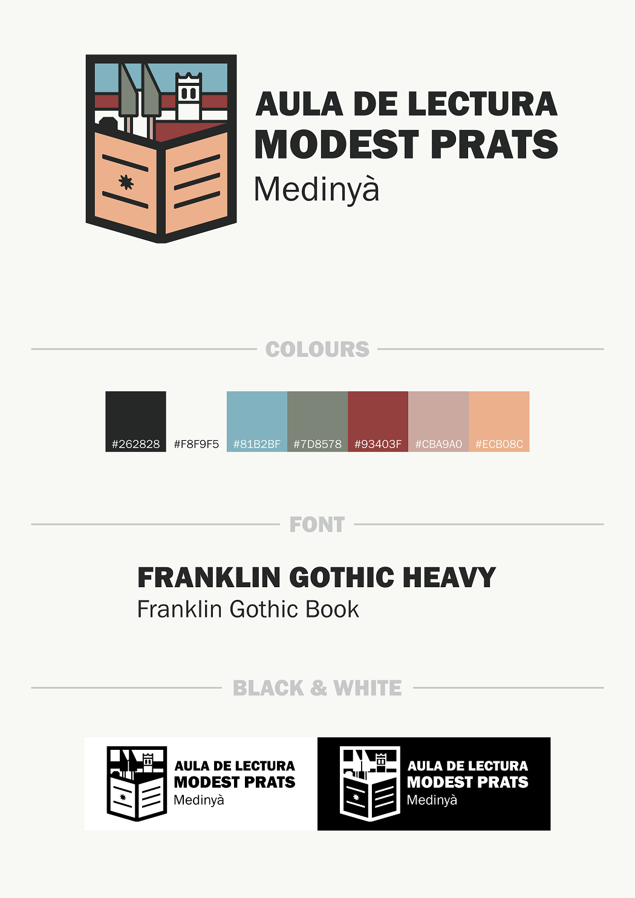

As I had always been interested in graphic design, and I had some experience designing logos for my own projects, I decided to enter the contest under the pseudonym Moriarty - a clear homage to my love for Sherlock Holmes. In the end, my design was selected as the winner over five other candidates, receiving 31 out of the 53 votes.
Specification Sheet

To read the conceptual explanation behind the design click here - only available in Catalan.